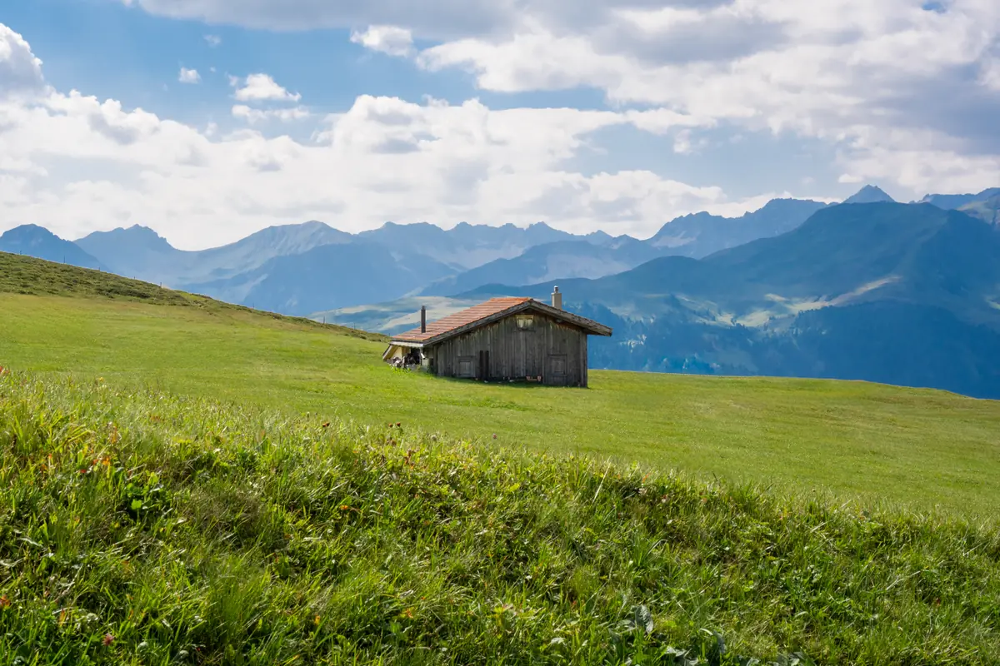

Outdoors Dolomites, Italy
Hut to hut across the Dolomites
Six days on the Alta Via 1, sleeping in mountain huts, with nothing but a day pack and a lot of pasta.


The Dolomites are the only mountains I know where you can walk all day across wild, rocky passes and still sit down to a three-course dinner at night. That is the magic of the rifugi, the mountain huts that sit along the trails.
The Alta Via 1 links them together in a line from north to south. I walked the best part of it in six days.
How the huts work
Most huts offer half board: a bed in a shared dormitory, dinner and breakfast. Dinner is usually soup or pasta, a main course and dessert, and it is very welcome after seven hours of walking.
Because the huts provide bedding and food, you only need to carry a small pack with clothes, water, snacks and a sleeping bag liner. Mine weighed seven kilos.

The walking
The days are long but rarely technical. The path climbs over high passes, drops into green valleys and crosses scree slopes where the trail is marked with painted stripes on the rocks. Some sections have cables for the steepest parts, but most of it is simply walking.
The weather changes fast. On day three I started in sunshine and finished in hail. Afternoon storms are common in summer, so the huts encourage early starts and early arrivals.
Booking and timing
The huts are usually open from late June to late September, and the popular ones fill up early. I booked every night three months in advance, by email and phone.
If you can, avoid August. It is the busiest month, and the trails and huts are noticeably quieter in early July and September.